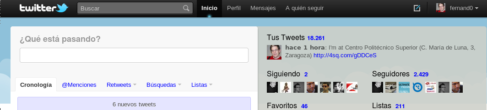

Fotografías en movimiento
This is an archived post This is an archived post
Previous
Index
Next
Jeje. Twitter dice que sigo a 2. Mi nivel de gurutosidad se eleva...
December 23 2010, 2:35 AM
by fernand0

242 views and 1 response
Dec 23 2010, 2:45 AM
jlchulilla responded:
cuál es la diferencia entre tu uso de posterous y tu uso de tumblr?